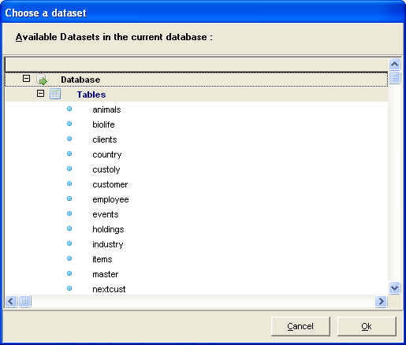
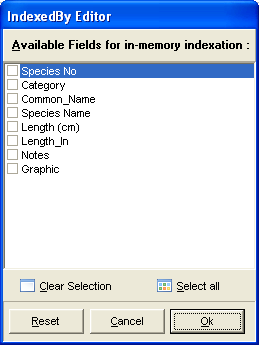
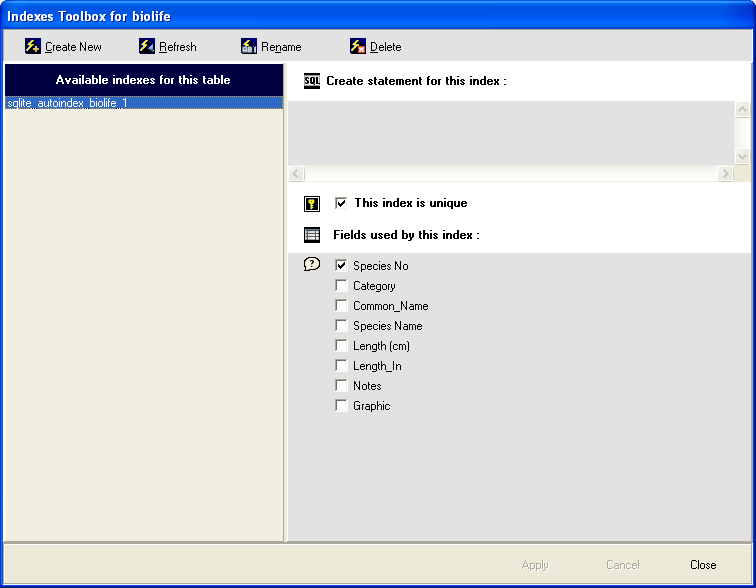
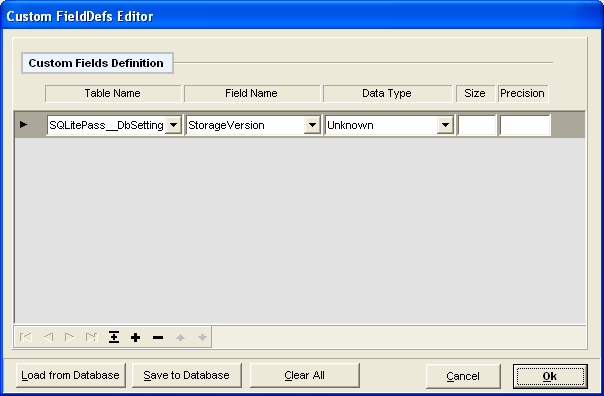
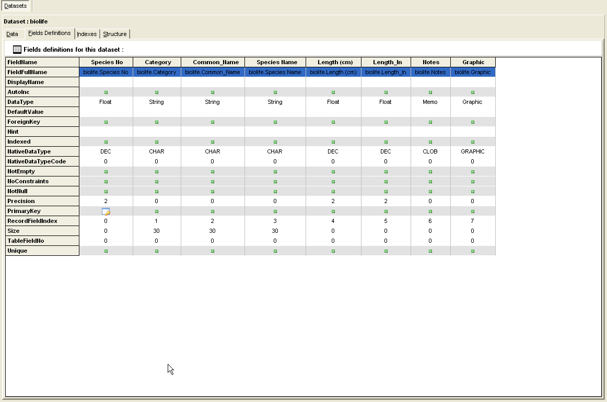
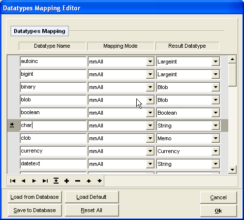
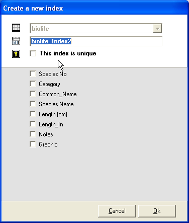
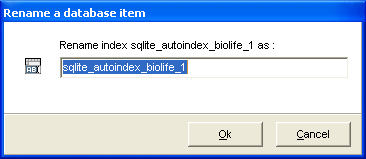

Used by TsqlitepassDataset.SortedBy property. Displays a dialog to select fields to be sorted .

Version 0.51 - Last Revision 2010-05-16
The SqlitePass components project planes to provide a easy and fast access to sqlite databases. The Installation packages registers three components in the IDE :
A Database Component (TSqlitePassDatabase)
A Dataset Component (TSqlitePassDataset)
A DBActionList Component (TSqlitePassDBActionList) and associated DbActions dedicated to work on TSqlitePassDataset : TSqlitePassDatasetSortAsc, TSqlitePassDatasetSortDesc, TSqlitePassDatasetSort, TSqlitePassDatasetFilterOnSelection, TSqlitePassDatasetFilter, TSqlitePassDatasetFilterOnOff,TSqlitePassDatasetLocate, TSqlitePassDatasetLocateFirst, TSqlitePassDatasetLocatePrior, TSqlitePassDatasetLocateNext, TSqlitePassDatasetLocateLast.
At the moment, these components support reading from / writing to databases created with :
The Kexi project (for Linux and Windows)
The Sqlite Expert (for Windows)
SQLite Administrator (Database manager for Windows)
Sqlite4Fpc (Database component for FPC)
SqliteToolbox (The demo program included with SqlitePass components, for windows and Linux)
or your own custom sqlite database using Database.DataTypeOptions (TSqlitePassDatabaseDataTypeOptions)
This project is open source, released under LGPL license.
Libraries and components are free and currently tested with Delphi 4 & 6, Delphi 2009 & 2010 - Lazarus 0.9.29 – FPC 2.4.1.
From 0.45 version, the components should be "unicode friendly".
The library will not be considered as "stable" until the 1.0 release. Let me know in you want to use those components with other Delphi versions.
Windows users : Download sqlitedll-3_x_xx_x.zip, Unzip and copy the sqlite3.dll in a system directory, ..\Windows\system32 or ..\Windows\SysWOW64 for example.
For linux users : Download, sqlite-amalgamation-3.x.xx.x.tar.gz. Use the classic installation procedure : Unpack the file in your favorite folder, /home/MyFavoriteDir/ for example. Open the console application and go to the extracted files : 'cd /home/MyFavoriteDir/sqlite-3.x.xx.x', then type './configure', 'make', 'make install' or 'sudo make install' in you use ubuntu. Depending on your linux distribution, You may need to be logged as root to perform the final 'make install' step. You can also use synaptic or any package manager in order to install the library. The resulting libsqlite3.so file is generally located in /usr/local/lib or /usr/lib.
Uninstall any previous version of SqlitePassDbo components : Choose [Components] [Install Packages] from IDE menu.
Select the SqlitePass package and click Remove.
Compile Runtime package : Choose [File] [Open] from the IDE menu and select ..\SQLitePass\Packages\Delphi4\D4_SqlitePassDbo_Runtime.dpk. Compile this package and move the resulting file from SQLitePass_vX.XX\Packages\Delphi4\D4_SqlitePassDbo_Runtime.bpl to a directory inluded in the Delphi search path (like ..\Delphi4\Bin or ..\Windows\system32 for example). Delete or overwrite any previous D4_SqlitePassDbo_Runtime.bpl.
Compile and install Designtime package : Choose [File] [Open] from the IDE menu and select ..\SQLitePass\Packages\Delphi4\D4_SqlitePassDbo_Designtime.dpk. Compile this package, then choose install.
Check installation : Select SqlitePassDbo on component palette pages and drop a SqlitePassDatabase and a SqlitePassDataset on a new form. Check the components versions are correct in object inspector.
Uninstall any previous version of SqlitePassDbo components : Choose [Components] [Configure Installed Packages] from IDE menu
Select the Laz_SqlitePassDbo_Runtime and Laz_SqlitePassDbo_Designtime packages and click [Uninstall the selection] then [Save and quit the dialog].
Compile the Laz_SqlitePassDbo_Runtime package. Compile and install the Designtime package : Choose [File] [Open] from the IDE menu and select ..\SQLitePass\Packages\Lazarus\Laz_SqlitePassDbo_Designtime.lpk. In package dialog, Choose compile - this way, the Laz_SqlitePassDbo_Runtime will automatically be compiled. Then select install to rebuild the IDE.
Check installation : Select SqlitePassDbo on Component palette pages and drop a SqlitePassDatabase and a SqlitePassDataset on a new form. Check the components versions are correct in object inspector.
Place a SqlitePassDatabase component on a form,
Choose Database file the Database property (a database *.kexi file from ..\SQLitePass_x.xx\Demo\Databases for example),
Set Connected property to True,
Place a SqlitePassDataset component on the form
Set Database property to the name of SqlitePassDatabase component (by default this is SqlitePassDatabase1),
Select a dataset from the DatasetName property dialog editor,
Set Active property to True.
Place a standart Delphi or Lazarus DataSource component on the page,
Set DataSet property to the name of the SqlitePassDataset component (by default this is SqlitePassDataset1)
Place any DBAware component like DBGrid, DBNavigator...etc, on the form.
Set DBGrid's, DBNavigator...etc, DataSource property to the name of DataSource component (by default this is DataSource1)
This is it !
D4_SqlitePassDbo_Designtime.dpk
Designtime package, used to :
Register and display components in Delphi IDE,
Register property editors in Delphi IDE.
Packages/Delphi6
D6_SqlitePassDbo_Runtime.dpk
Runtime package. Shoul be compiled first (see the installation section)
D6_SqlitePassDbo_Designtime.dpk
Designtime package, used to :
Register and display components in Delphi IDE,
Register property editors in Delphi IDE.
Packages/Delphi7
D7_SqlitePassDbo_Runtime.dpk
Runtime package. Shoul be compiled first (see the installation section)
D7_SqlitePassDbo_Designtime.dpk
Designtime package, used to :
Register and display components in Delphi IDE,
Register property editors in Delphi IDE.
Packages/Delphi2009
D2009_SqlitePassDbo_Runtime.dpk
Runtime package. Shoul be compiled first (see the installation section)
D2009_SqlitePassDbo_Designtime.dpk
Designtime package, used to :
Register and display components in Delphi IDE,
Register property editors in Delphi IDE.
Packages/Delphi2010
D2010_SqlitePassDbo_Runtime.dpk
Runtime package. Shoul be compiled first (see the installation section)
D2010_SqlitePassDbo_Designtime.dpk
Designtime package, used to :
Register and display components in Delphi IDE,
Register property editors in Delphi IDE.
Packages/Packages/Lazarus
Laz_SqlitePassDbo_Runtime.dpk
Runtime package. Shoul be compiled first (see the installation section)
Laz_SqlitePassDbo_Designtime.dpk
Designtime package, used to :
Register and display components in Delphi IDE,
Register property editors in Delphi IDE.
SlitePassDatabase.inc,
SqlitePassDatabaseParts.inc,
SqlitePassDataset..inc,
SqlitePassRecordset.inc,
SqlitePassSelectStmt.inc,
SqlitePassEngine.pas.
SqlitePassDbo.lrs : Lazarus ressource file used to dipslay components icons in IDE. SqlitePassConst.pas : Constant definitions
SqlitePassErrorLang.pas : Ressource strings for language support. To translate this file :
Backup the original file and translate the strings in your own language.
Replace the SqlitePassErrorLang.pas with your own file.
Compile and overwrite any existing runtime package. (see installation section).
Only English file is available so far. A French one will be done shortly. Translators are welcome !
SqlitePassUtils.pas : Implements a TObjectList (The code is just a copy from FCL) and other objects, mainly to provide code compatibility between Delphi 4 and Lazarus.
*.pas files are shared by Delphi and Lazarus projects
*.dfm files are used by Delphi
*.lfm and *.lrs files are used by Lazarus
Designtime Editors Files descriptions :
RegisterSqlitePassDbo.pas
Registers and displays components and property editors in IDE.
SqlitePassChooseDatasetDialog.pas
Used by TsqlitePassDataset.Dataset property. Displays an treeview of available dataset in the current database.

SqlitePassIndexedByDialog.pas Used by TsqlitepassDataset.Indexes property. Displays a dialog to manage tables in memory indexes.

SqlitePassIndexesDialog.pas
Used by TsqlitepassDataset.IndexDefs property. Displays a dialog to manage tables indexes.

SqlitePassCustomFieldDefsDialog.pas
Used by TsqlitePassDatabase.DataTypeOptions.CustomFieldDefs property. Display a dialog to manage custom field definitions

SqlitePassFieldDefsDialog.pas
Used by TsqlitepassDataset.FieldDefsInfo property. Display a dialog showing field definitions of the currently selected dataset.

SqlitePassSortByDialog.pas
Used by TsqlitepassDataset.SortedBy property. Displays a dialog to select fields to be sorted .
SqlitePassDataTypesDialog.pas
Used by TsqlitePassDatabase.DataTypeOptions.TranslationRules property. Display a dialog to manage TranslationRules.

SqlitePassMasterDetailFieldsDialog.pas
Used by TsqlitepassDataset.MasterFields property. Displays a dialog to link Master and Detail fields.

SqlitePassDesignErrorLang.pas
Defines DesignTime error messages.
CreateNewIndex.pas
Used by the indexes dialog when creating new table index.

RenameItem.pas
Used by the indexes dialog when renaming a existing table index.
